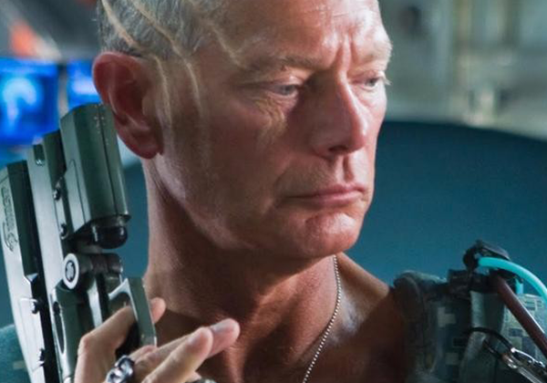
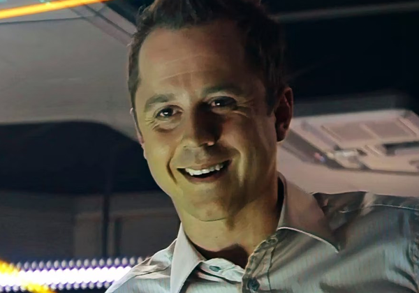
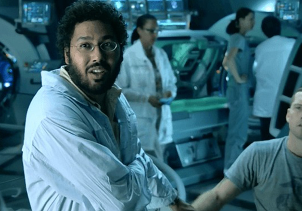

Cast
Human
Human
Humans are a sapient, bipedal mammalian
species native to Earth,
who by the 22nd century has become a technologically advanced
species capable of interstellar travel and colonization.
-

Miles Quaritch
Colonel Miles Quaritch was a RDA Security Operations commander, serving as the chief of security on Pandora in the early 2150s. Serving as the senior RDA commander during the Pandoran War, he directed the destruction of the Omaticaya clan's Hometree and led SecOps forces in the Assault on the Tree of Souls, where he was killed in action. However, he has been resurrected as a recom.
-

Parker Selfridge
Parker Selfridge was the passive-aggressive head administrator of the RDA on Pandora and, along with Colonel Quaritch, became an antagonist during the course of Avatar.
-
Norm Spellman
Norm Spellman is a human anthropologist as well as an avatar driver. It is currently unknown whether or not he had his consciousness transferred into his avatar body, like Jake, his friend and ally.
-

Max Patel
Dr. Max Patel is a civilian scientist on Pandora. He appears to be in charge of overseeing the process of synchronizing the minds of humans with their avatar bodies as well as providing technical advice and support to the avatar team. Max is implied to have been on Pandora for a number of years by the time of Jake Sully and Norm Spellman's arrival as a member of Dr. Grace Augustine's original staff. He is the inside man for the RDA defects, and one the few Humans allowed to stay on Pandora after the Pandoran War.